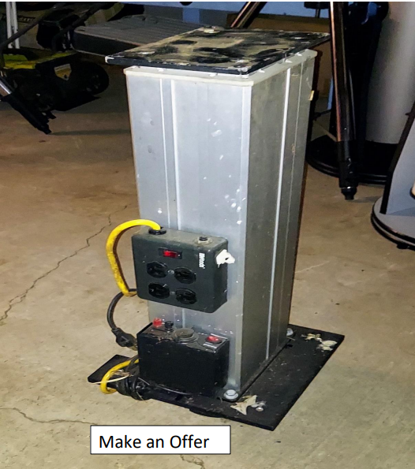

Telescopes, Tripods, and More For Sale
The York County Astronomical Society (YCAS) needs to clear out space in our Observatory Deck to install our new roof. We have these Telescopes and Tripods for sale. All equipment is sold “As is” with most requiring cleaning and/or may be missing some parts.
Price: Suggested Price listed but after inspecting the items, make us a reasonable offer.
When: Before our next Public Star Watch January 14, 2023, we will have the observatory at John Rudy Park open so you can inspect any items you wish to look at and make your offer. We will have all items available starting at 6:15pm on January 14th. If you cannot make the event on the 14th you may be able to make other arrangements to visit by contacting us at info@astroyork.com.
Telescopes Meade MTS-SN8 (8-inch mirror) F5 multi-coated optics for $200.00 with red dot finder, no eyepieces, no tripod.
Orion 8mm refractor with eyepiece and finderscope, no tripod for $125
Celestron C150-HD Newtonian Reflector Telescope, 1000mm focal length, F7, with finder scope, various eyepieces, wooden case, no tripod for $150
8-inch Newtonian Reflector on equatorial motorized mount/tripod with finder scope for $250.00
8-inch Newtonian Reflector F4.5 with finder scope and wooden storage case for $250.00
Celestron NexStar 8SE with computer controls, red dot finder, eyepiece, and tripod for $600.00
Meade 10-inch SCT with finder scope, diagonal, eyepiece, wedge, and tripod for $450.00 to $500.00
Celestron PowerSeeker 114EQ with finder scope, equatorial mount and tripod for $150.00
Tripods Celestron computer controled tripod with counter weights for $150.00
Three items here. Skyview Pro Tripod for $150, Skymaster GoTo System for $240, and GPS Unit with 65 Channels for $100.00
Equatorial Tripod for 8-inch newtonian reflector (not included) for $90.00
Tripod for $90.00
Tripod for $90.00
Two items here, Celectron tripod for $100.00 and Meade wedge for $150.00
Pier  Telescope Pier, make an offer.
GoTo Computer Meade Goto computer for $200.00
12-inch Venus Globes are available, make offer.
For more information on events, scheduling a private party star watch, directions to the observing site, or for general Society information please contact us at info@astroyork.com or leave a voice message after the recording at 717 759-9227 or visit our Facebook page